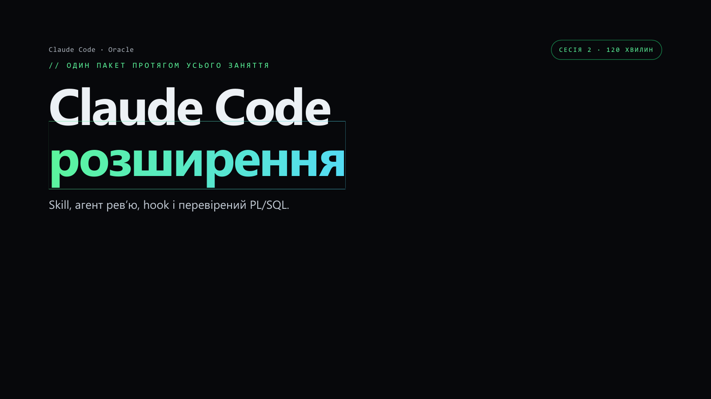

Сесія 2 · презентація
Слайди заняття
26 слайдів: від правил ревʼю до перевіреного PL/SQL. Під час вправ відкрийте шпаргалку та демо з поясненнями.
Завантажити PDF Відкрити окремий PDF

Слайд 1 із 26
Гортайте кнопками або стрілками ← → на клавіатурі. Список дозволяє одразу перейти до теми. Переглядач працює офлайн із повного архіву учасника.